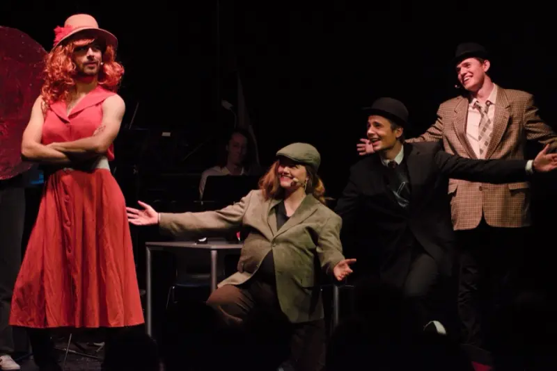
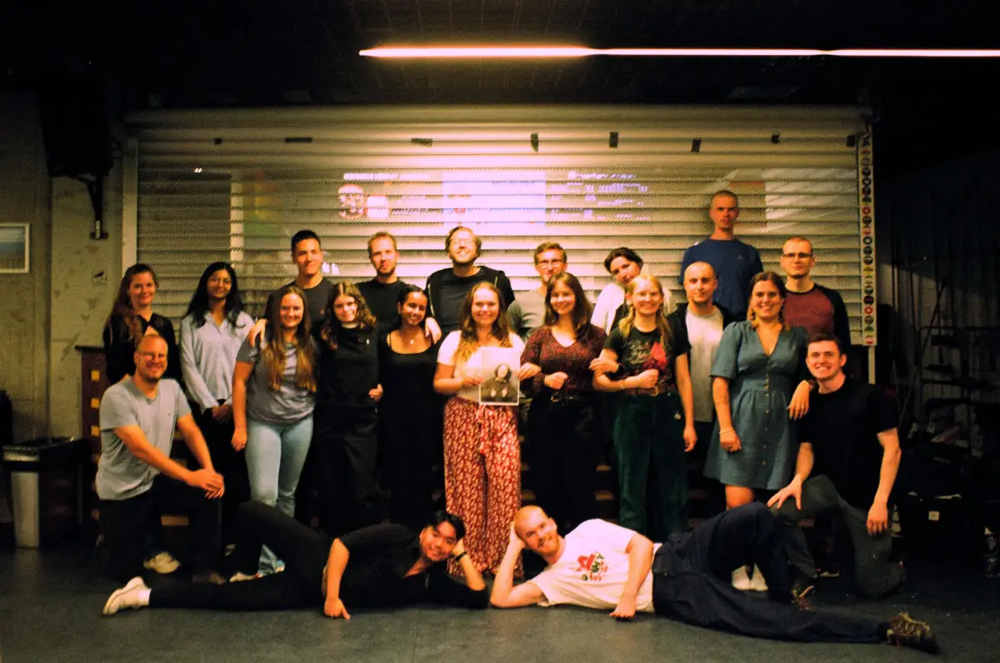
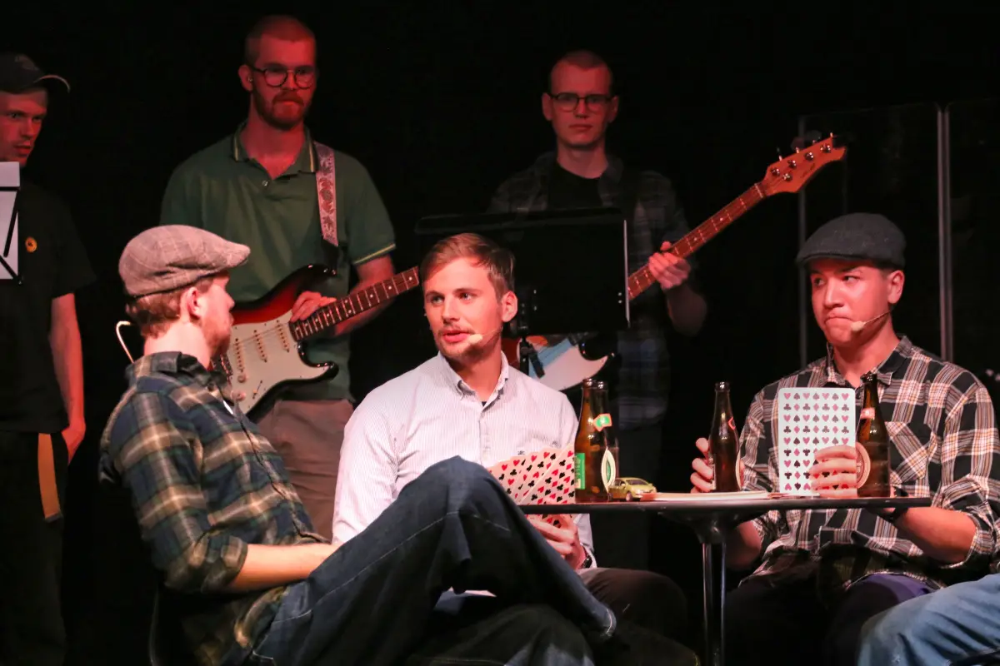
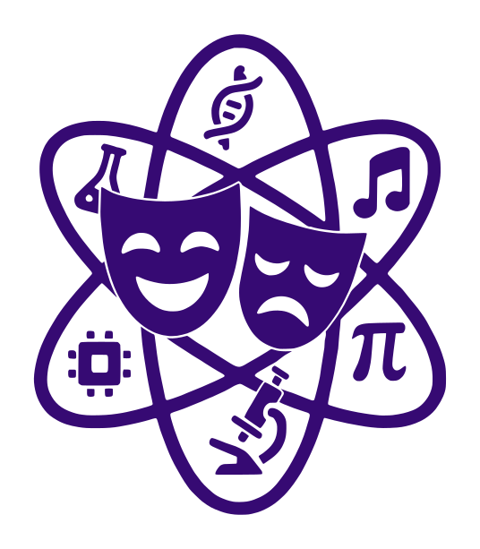
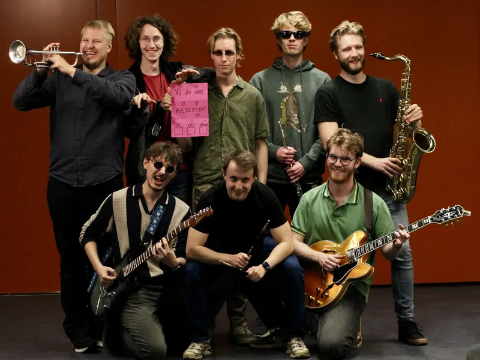
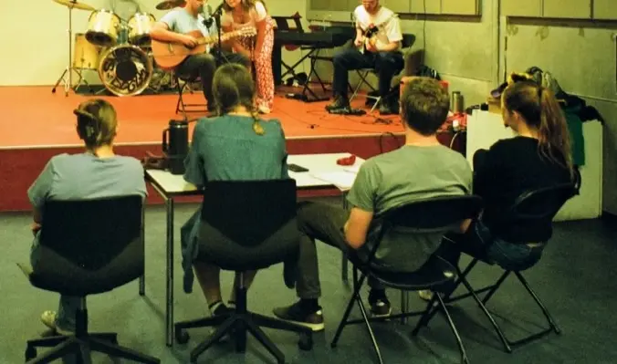
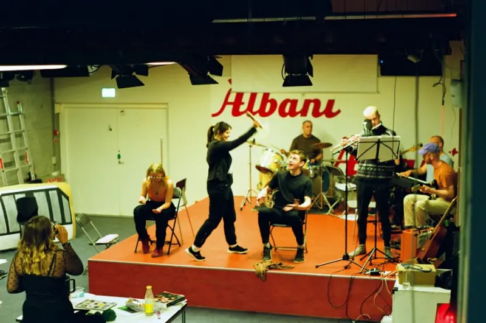
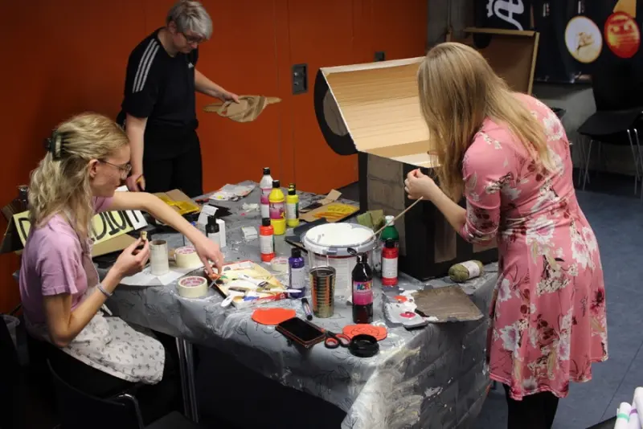
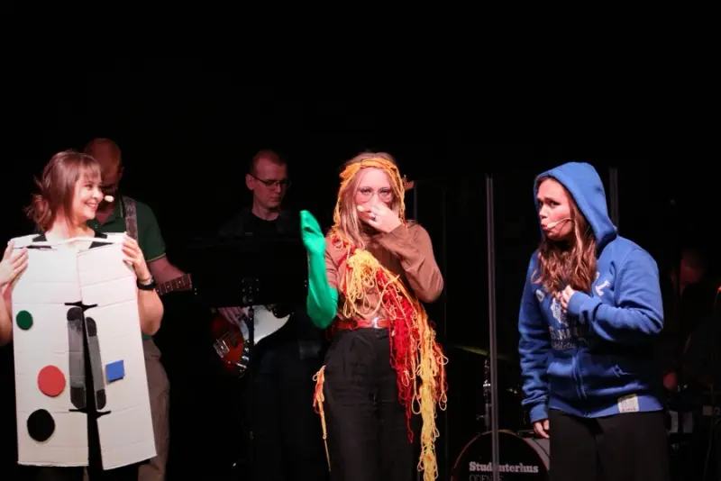

Skuespiller
Stå på scenen, spil karakterer og formidl sketches med energi
NAT Revyen er en studenterdrevet forening på SDU, hvor omkring 30 engagerede studerende hvert år skaber en revy fyldt med sketches, sange og scenografi. Vi arbejder sammen på tværs af studieretninger og opfører forestillingen i Studenterhuset Odense den første weekend i oktober



Uanset om du vil stå på scenen eller arbejde bag kulissen, er der plads til dig i NAT Revyen

Stå på scenen, spil karakterer og formidl sketches med energi

Spil live musik til forestillingen og vær med til at skabe stemningen

Hjælp med iscenesættelse, timing og at samle numrene til en helhed

Skriv skuespil, punchlines og idéer, som bliver til revynumre

Hold styr på rekvisitter, skift og afvikling bag scenen

Design visuelle udtryk, kulisser og kostumer, der løfter forestillingen
Roller søges først i maj, så der er god tid til at finde ud af, om du hører til på scenen, i bandet eller bag kulisserne.
Se sæsonenHvad kræver det at være med?– spørger alle nye. Læs svarene
Til næste revy søger vi skuespillere, musikere, skribenter og hænder bag scenen. Du behøver ingen erfaring, og studerende fra alle fakulteter på SDU er velkomne!
Bliv medlemFra intromødet i november til premieren i oktober.
OpstartNovember til januar
Intromødet og generalforsamlingen skyder sæsonen i gang.
SkrivningFebruar til april
Sketches og sange bliver skrevet til skriveaftener og hyggemøder.
Valgaften og rollerApril og maj
Sketches bliver valgt til valgaftenen, og rollerne bliver fordelt.
ØvelseMaj til september
Numrene bliver øvet ind frem mod premieren.
Intensuge og forestillingSeptember og oktober
En uge med prøver hver dag og så forestillingerne i Studenterhuset Odense den første weekend i oktober.